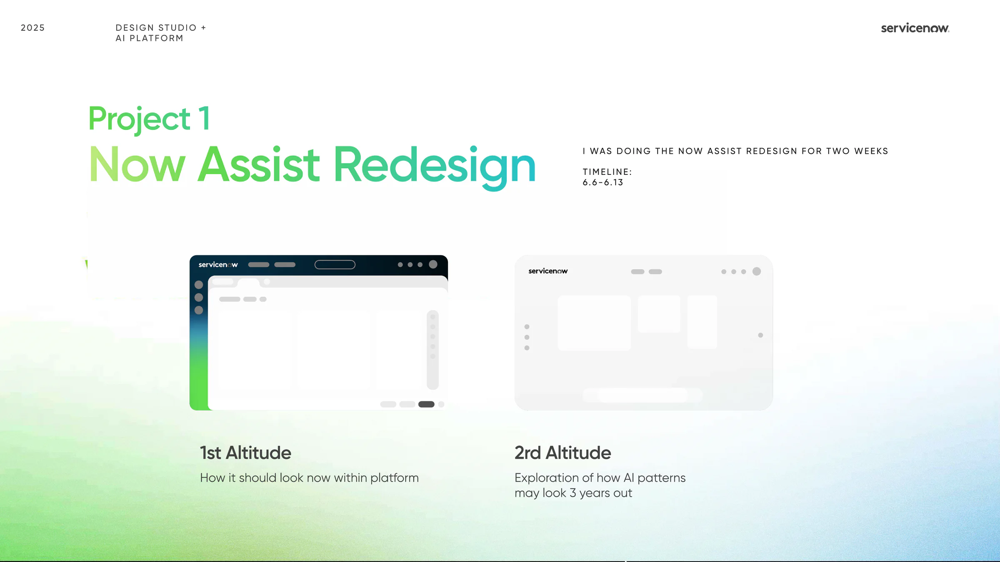
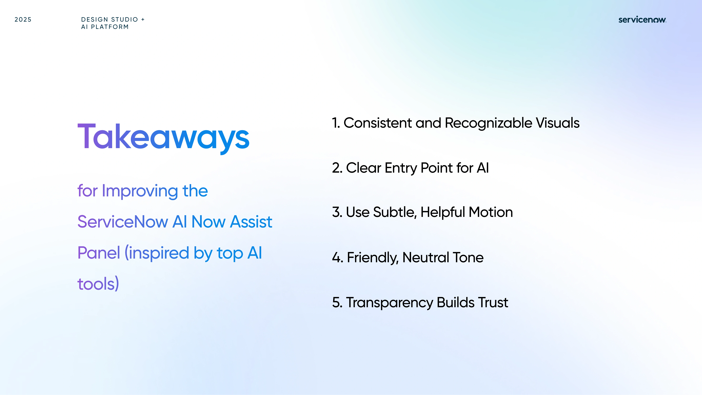
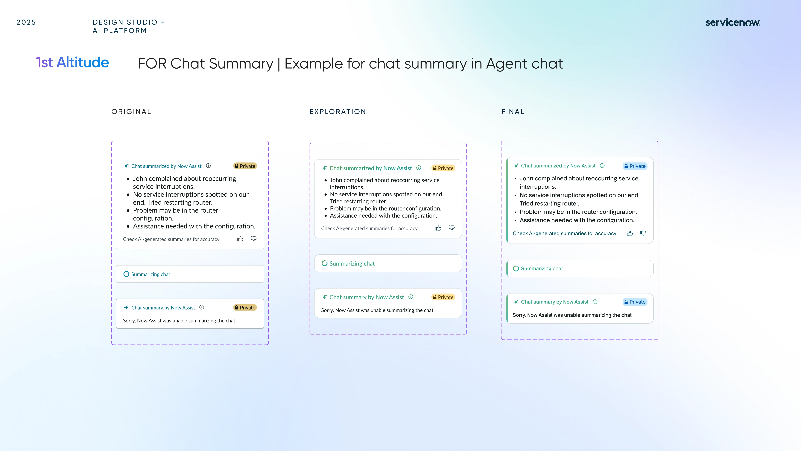

Now Assist needed more visual clarity and a calmer interaction model.
The current patterns felt layered, dashboard-heavy, and hard to scan, especially when users needed quick confidence in what the AI was doing.
Project / Internship
Research, redesigns, and AI interaction explorations developed within ServiceNow's Design Studio + AI Platform.

This internship showcase captures a summer of designing for ServiceNow's AI experiences, with a focus on making Now Assist feel clearer, more trustworthy, and more usable inside dense enterprise workflows.
The work combined competitive research, problem framing, visual system refinement, and interface exploration across summaries, controls, feedback flows, and future-facing AI patterns.
Discuss this project ↗The current patterns felt layered, dashboard-heavy, and hard to scan, especially when users needed quick confidence in what the AI was doing.
I mapped user complaints, identified repeat friction points, and explored first-altitude and future-altitude concepts for summaries, controls, and feedback behavior.
The resulting directions emphasized recognizable visuals, subtle motion, clearer entry points, improved feedback states, and a more neutral, trustworthy tone.

